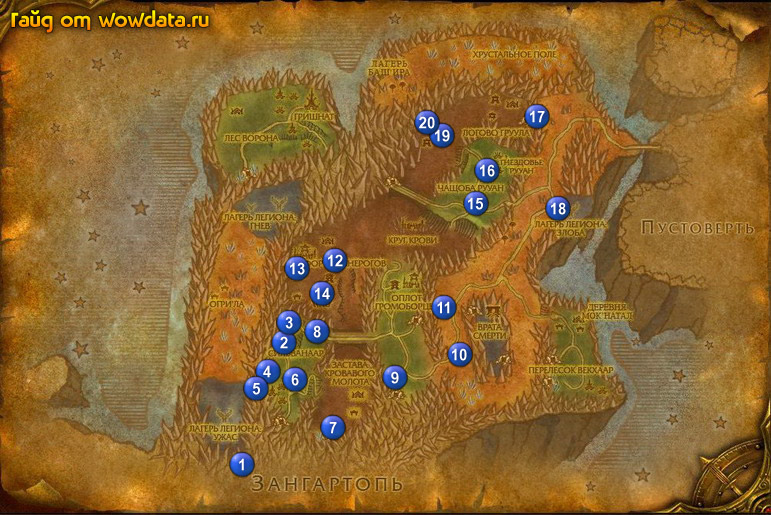

1) Около пещеры начните <Убийство крабов> 1 (32, 91), пока идете по пещере на другую сторону бейте пауков для этого квеста.
2) Идите по дороге пока не дойдете до Сильванаар, начните <Мать логова> на столбе розыска
2 (37, 67), теперь идите в первый дом с левой стороны к Киалон Ночной Клинок и закончите <Не время для любопытства>, теперь выйдите из дома и у Рина Лунный Родник начните <Угроза хищников>.
3) Пойдите к следующему дому и закончите <Убийство крабов>, начните q,10502} .
4) Немного севернее вы увидите Даранелла, начните <Болезнь>, в доме рядом с ней вы увидите двух из Лиги Исследователей , начните у них <Копи дренейского аметиста> и <Странное пойло>.
5) Идите в гостиницу через дорогу и сделайте ее своим домом. Затем идите на площадку 3 (38, 62) и откройте пункт перелетов.
6) Идите на юг от города и бейте Рысь рощи для <Угроза хищников>, когда убьете их 12 штук идите на запад к Гнездовье Лашш 4 (35, 73) и бейте любых мобов ради их перьев. Будте осторожны, если они побегут в круг, они могут присумонить петов. После того как соберете 18 перьев поднемитесь на дерево 5 (34, 76), на верху вы увидите книгу на столе. Используйте книгу и закончите <Болезнь>, начните <Рисунки>. теперь идите встанте в центр фиолетового круга и используйте перья чтобы полчить Тотем калири – птичку.
7) Бегите в Сильванаар и слева у Рина Лунный Родник, закончите <Угроза хищников>, начните <Волчья напасть>.
8) Затем идите к Даранелла, поговорите с ней, а затем закончите <Рисунки>.
9) Идите на юго-восток в Лощина Кровавого Молота 6 (38, 74) и бейте огров для <Огры Кровавого Молота>, так же ищите бочки в которых [Забористое пойло Кровавого Молота] для <Странное пойло>, вы можете так же найти [Забористое пойло Кровавого Молота] убивая Пивовар из клана Кровавого Молота. Продвигайтесь немного на юг к Копи дренейского аметиста 7 (43, 82).
10) Внутри пещеры бейте всех огров которых видите и собирайте [Рудничный кристалл дренейского аметиста] для <Копи дренейского аметиста>
11) Бегите обратно в Сильванаар. Во втором здании слева у Командир Тень Небес закончите <Огры Кровавого Молота>, начните <Огры Камнерогов>.
12) Идите длинный дом справа к Богрим Твердомолот и закончите <Странное пойло>, начните <Пусть Камнероги упьются!>. напротив у Бронвин Твердомолот закончите <Копи дренейского аметиста>.
13) Идите по дороге на восток 8 (41, 65) в направлении ордынской базы, и бейте Лютый волк клана Громоборцев для <Волчья напасть>, затем идите в пещеру 9 (52, 74) и убете Рема для <Мать логова>.
14) Идите на восток пока не увидите Р-3Д0, поговорите с ним.
15) Идите по дороге наверх к 10 (60, 69) и у Никвинкль Метрогном начните <Ясно, как день!>, у Застава ВВС (станция Тошли - ветролет) начните <Спасти преобразователи энергии!>, затем пройдите чуть-чуть на восток в горку и откройте пункт перелетов 10 (61, 70).
16) С другой стороны города у Талли Быстроцап 10 (60, 68) начните <Испытательный полет: Конденсаторий зефира>, закончите квест у Ралли Быстроцап и скажите что вы готовы, далее вас забросит недалеко от Р-3Д0, вы останетесь живы после падения.
17) Идите обратно и поговорите с Талли Быстроцап, закончите этот квест и начните <Испытательный полет: Звенящий гребень>.
18) Идите на север к Застава Камнерогов 11 (57, 60) и кликните по Трансформатор, затем используйте [Протовольтаический магнетоколлектор] на Электроменталь и бейте их для <Спасти преобразователи энергии!>.
19) Идите обратно к Тошли и закончите <Спасти преобразователи энергии!>, начните <Оседлать молнию>.
20) Теперь поговорите с Дина Головокружилка и начните <Угроза горного хребта>, затем вы должны увидеть Разак Сковородкер, начните у него <Точи зубы!>.
21) В гостинице начните <Что было первым, дракон или яйцо?>.
22) Используйте [Отказ от претензий к Талли (неподписанный)], затем идите снова поговорите с Ралли Быстроцап на тему Звеняший Гребень, потом опять изобразите из себя пушечный снаряд. Теперь вы с ругой стороны каньена.
23) Идите на север от этого мест используя [Реполяризованная магнитная сфера] для поглощения ударов обитающих тут существ для <Оседлать молнию>, так же вы должны добыть 5 [Молниевая железа чешуекрылого] из Чешуекрылый змей.
24) Так же тут ищите у ибивйте Паук высокогорья для <Угроза горного хребта>, и еще бейте Кнутохвост из каньона Кинжальной Пасти ради их зубов для <Точи зубы!>, большинство их находятся на севере.
25) Вернитесь в Станция Тошли чтобы разгрузиться и закончите <Оседлать молнию>, начните <Ловля фантастического света>. Теперь идите вниз на бг и югo-восток, ищите яйца драконов под кристалами, открывайте их, на маленьких дракончиков используйте [Временный фазовый модулятор], зтаем убивайте получившихся драконов для <Что было первым, дракон или яйцо?>.
26) Тут же убивайте Кристальный камнедер для <Ясно, как день!>.
27) Когда закончите идите обрано в Станция Тошли к Никвинкль Метрогном, закончите <Ясно, как день!>, начните <Калибровка резонансной частоты>.
28) Подойдите к Талли Быстроцап и закончите <Испытательный полет: Звенящий гребень>.
29) У Дина Головокружилка закончите <Угроза горного хребта>, начните <Не просто фунт мяса>.
30) найдите Разак Сковородкер и закончите у него <Точи зубы!>, затем в гостинице закончите <Что было первым, дракон или яйцо?>.
31) Теперь снова идите к Талли Быстроцап и начните <Испытательный полет: лагерь Разаана>, но не завершайте го пока что.
32) Идите к драконам, расчистите от монстров полянку, теперь используйте [Осцилляционные сканеры], соберите из энергетических потоков квадрат со стороной примерно 40 ярдов, последняя точка будет по середине.
33) Теперь вернитесь к Никвинкль Метрогном и завершите <Калибровка резонансной частоты>.
34) Идите к Ралли Быстроцап и скажите ему что вам влагерь Разаана.
35) Идите внутрь лагеря, когда вы ивидите летающие розовые шарики поставте [Радужная световая ловушка] чтобы поймать его. И бейте Злобный плотозверь для <Не просто фунт мяса>. Если вы будете ждать шарики у их генератора то процес пойдет быстрее.
36) Идите обратно в город и у Тошли закончите <Ловля фантастического света>, начните <Попомните гномскую доброту!>, у Дина Головокружилка закончите <Не просто фунт мяса>.
37) Подойдите к Талли Быстроцап и закончите <Испытательный полет: лагерь Разаана>, затем поговорите с Ралли Быстроцап чтобы вернуться влагерь Разаана.
38) Снова идите в лагерь, убейте любых 4 моба чтобы их энергия наполнила портал посередине, появится Принц Разаан, убейте его. После его смерти останется коробка – хранилище душ, откройте ее для <Попомните гномскую доброту!>.
39) Идите к Тошли и закончите у него этот квест.
40) Летите в Сильванаар.
41) Идите вниз к дому следующему за гостиницей, поговорите с Командир Тень Небес, закончите у него <Мать логова>, еще дальше поговорите с Рина Лунный Родник, и закончите у нее <Волчья напасть>, начните <Защитить свой дом>.
42) Идите на юг от поселка и ищите на земле Сеянец рощи, открывайте их для <Защитить свой дом>.
43) Вернитесь в поселок и закончите квест, начните <Тяжелая ситуация>.
44) Снова идите на юг внутрь Лощина Кровавого Молота и используйте [Уменьшающий порошок Рины] на Свирепый волк клана Кровавого Молота для <Тяжелая ситуация>, они станут маленькими и дружелюбными когда вы сделаете это.
45) Идите по дороге на север пока не придете в Крепость Камнерогов.
46) По дороге начните <Вещи Поборницы> у Воздаятельница Вуулина 12 (43, 51).
47) Бейте орков тут для <Огры Камнерогов>, незабывайте ставить на землю кружку, чтобы напоить 5 огров для <Пусть Камнероги упьются!>, когда вы поставитье выпивку они к ней сразу подбегут, затем можете убить их.
48) Дроггам находится в здании 13 (39, 53) с 4 гвардами: 2 элитными и 2 простыми. Спокойно пульте неэлитных гвардов, затем поставте кружку с настойкой примерно по центру между костром и входом, чтобы ее действие распространилось на моба, будте уверены что он выйдет без элитной охраны и помните что заряды у кружки не бесконечны а удачно использовать ее неободимо всего 3 раза. Это все для <Вещи Поборницы>.
49) Следующая часть этого квеста – Магдорг 14 (42, 57), тактика та же.
50) Идите назад к Воздаятельница Вуулина 12 (44, 51) закончите <Вещи Поборницы>, начните <Горр'Дим, твой час пробил...>.
51) Идите на запад к большому шалашу 13 (40, 49) вы увидите Горр'Дим, тактика та же с пивом. Вернитесь к Воздаятельница Вуулина, закончите квест и игнорируйте <Водружение знамени>.
52) Вернитесь по руне в Сильванаар.
53) Идите через дорогу от гостиницы к Богрим Твердомолот и закончите <Пусть Камнероги упьются!>.
54) Выйдите из здания и идите налево к Командир Тень Небес закончите <Огры Камнерогов>, далее идите к Рина Лунный Родник, закончите <Тяжелая ситуация>.
55) Летите в Станция Тошли, подойдите к Талли Быстроцап и начните <Испытательный полет: Чащоба Рууан>, затем поговорите с Ралли Быстроцап и прыгайте в новую локацию.
56) Откройте пункт перелетов 15 (62, 40), если вы забыли использовать [Флюгер Пустоты] летите назад и прыгайте снова.
57) Около лунного колодца поговорите с Хранитель Деревьев Чаун, начните <Время для переговоров...>, затем у Времион начните <Создание подвески>.
58) Пройдите на юг к О'Малли Быстроцап 15 (63, 40) и закончите <Испытательный полет: Чащоба Рууан>.
59) Пройдите на север к Фарадрелла и начните <Зачистка пустоши>
60) Западнее будут 2 NPC начните у них <Встреча с Доргоком> и <Унитожить лагерь Кровавого Молота!>, затем идите дальше на восток к Замшельник Древний и начните <Угольки> и <Восстать из пепла>.
61) У вас должно быть 70 – 75 % на лвл.
62) К западу от города найдите дренеея с желтым ником Надзиратель Нуаар и поговорите с ним для <Время для переговоров...>. Он ходит около лагерей.
63) Идите на северо-восток к Чащоба Рууан и бейте птиц ради [Коготь Рууан'ока], когда соберете 6 штукт идите к зеленому кругу 16 (64, 33), используйте когти чтобы сумонить Предвестник Ворона и убить его для <Создание подвески>.
64) Идите на юг затем на восток по дороге от города, бейте мобов дл <Зачистка пустоши>, из Fel Corrupter должна падать маска которая начинает <Поворежденная маска>, так что бейте их пока маска не выпадет.
65) Идите наверх к 17 (70, 23) – тут не помешает хороший фаер резист, и бейте импов для <Угольки>, а так же высматривайте Плодородная вулканическая почва для <Восстать из пепла> и сожайте семена в них. 17 (71, 22), (71, 20) и (71, 18).
66) Идите назад в Вечная роща.
67) Идите к О'Малли Быстроцап и закончите <Поворежденная маска>, начните <Таинственная маска>, закончите квест у Владыка леса Антеларион, который ходит по кругу в городе, начните <Респиратор Искаженных>.
68) Подойдите к Хранитель Деревьев Чаун у колодца и закончите <Время для переговоров...>, начните <...и время действовать>, затем около него начните <Вор у вора...>, теперь подойдите к Времион и закончите <Создание подвески>, начните <Шепот Бога-ворона>.
69) Подойдите к Фарадрелла и закончите <Зачистка пустоши>, далее на западе у Замшельник Древний закончите <Угольки> и <Восстать из пепла>.
70) Идите к 18 (73, 40), как только поднимитесь оденьте маску и слева вы увидите Переговорное устройство Легиона, используйте его (в маске) чтобы закончить <Респиратор Искаженных>, начните <Обмануть врага>.
71) Теперь убейте квестовых мобов там неподалёку закончите квест и игнорируйте следующую часть <Уволена!>, если рядом нету людей которые помогут вам.
72) Вы должны уже быть 67 лвл или очень близко к нему. маску можете уничтожить если не собираетесь продолжать цепь.
73) Вернитесь к городу и бейте Браконьер из Культа Змея ради их [Сеть Культа Змея] для <Вор у вора...> и бейте Лесоруб Культа Змея для <...и время действовать>, пока вы их всех бьете вaм должно выпасть [Записка о встрече] которое начинает <Где записка?>.
74) Бегите по дороге на cевер и затем вниз в Лагерь Кровавого Молота 19 (57, 27), бейте огров для <Унитожить лагерь Кровавого Молота!> и бейте Доргок на верху башни 20 (55, 24) для <Встреча с Доргоком>.
75) Из Доргок так же падает [Благоволение Горгрома] который начинает <Благоволение гронна>.
76) Бегите назад в Вечная роща либо вернитесь по руне в Сильванаар и летите в Вечная роща.
77) Подойдите к коменданду Командир Гефус Камнестен и закончите <Встреча с Доргоком> и <Благоволение гронна>, начните <Визит к барону>, затем рядом с ним закончите <Унитожить лагерь Кровавого Молота!>.
78) Около колодца поговорите с Хранитель Деревьев Чаун, закончите у него <...и время действовать> и <Где записка?>, начните <Страж Драконьего черепа>, затем поговорите со Самия Недомолвка и закончите <Вор у вора...>, начните <Дракончики Культа Змея>.
79) Сейчас вы точно должны быть 67 лвл, и даже чуть-чуть выше.